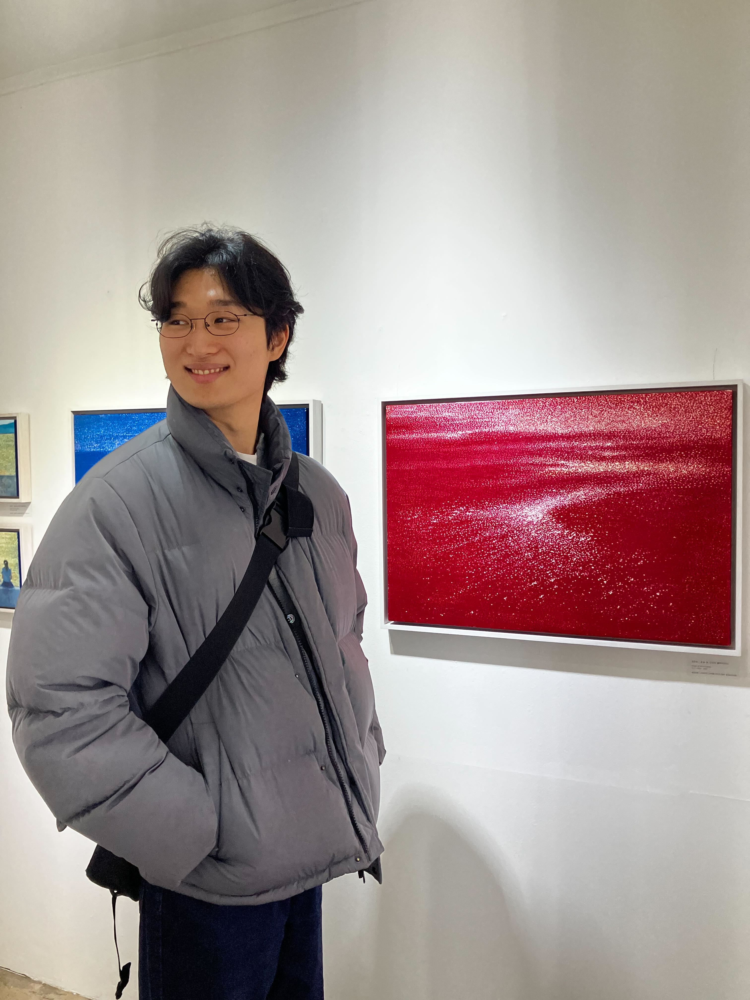

RB-Y1 Home-Service Robot System
End-to-end integration of perception, navigation, manipulation, HRI, and recoverable task execution for RoboCup@Home.

Robotics Engineer · M.S. Student
Inha University · Incheon, South Korea
ABOUT
I work on service-robot software stacks with an emphasis on robust task execution and real-time perception. My interests include ROS 2-based navigation, RGB-D and point-cloud perception, mapping, and behavior-tree-driven task execution with recovery.
INTERESTS
HIGHLIGHT
Open Platform League · 4th Place · Team Inha United @Home
CONTACT
Incheon, South Korea
SELECTED PROJECTS
End-to-end integration of perception, navigation, manipulation, HRI, and recoverable task execution for RoboCup@Home.

On-device inference and real-time costmap generation from RGB-D data for embedded robotic platforms.

RGB-D, LiDAR, and odometry-based mapping for stable localization and navigation in cluttered environments.

Interpretable high-level task control with bounded retries and recovery-oriented execution patterns.